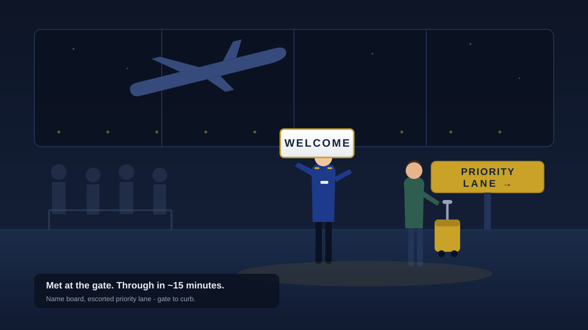

60-100 minutes standing at immigration is the norm at Tan Son Nhat on a bad evening. Here is what the wait really looks like at each airport - and how a fast track agent walks you past it.
See fast track packages →Meet & greet at HAN · SGN · DAD - from gate to curb in ~15 minutes
Every airport has its own rhythm - peak banks, charter waves, holiday spikes. Fast track is bookable per airport, per passenger.
Peak wait: 60-100 min
Vietnam's busiest terminal. Evening and weekend arrivals queue the longest - fast track pays for itself here.
Fast track SGN →Peak wait: 45-90 min
Worst at the 5-8am European bank and 7-10pm East Asia wave. Midday arrivals move faster.
Fast track HAN →Peak wait: 20-40 min
Usually quick, but Tet and tour-group charter waves still spike the queue.
Fast track DAD →Reserve at least 12 hours ahead with your flight number and arrival time - staff are assigned to your flight.
An agent holding your name meets you at the jet bridge and handles any visa-desk paperwork first.
Escorted through the fast lane at immigration - most travelers are curbside in 10-15 minutes.

Hour-by-hour reality at HAN, SGN and DAD - peak banks, worst windows, and when you can skip fast track entirely.
Read the guide → e-VisaPapers to print, e-visa vs visa-on-arrival steps, and where the time actually goes between gate and taxi.
Read the guide → VerdictHonest verdict by airport, arrival time and traveler type - when it pays, and the one case you can skip it.
Read the verdict → HAN · HanoiTwo predictable queue banks at Terminal 2 - the 5-8am European wave and the 7-10pm East Asia bank. How the meet & greet works.
HAN guide → SGN · SaigonVietnam's longest immigration queue - 60-100+ min most evenings. Why SGN is the airport where fast track earns its money.
SGN guide → DAD · Da NangUsually the fastest of the three - 20-40 min. When it still pays off (Tet, charter banks, tight schedules) and when to skip it.
DAD guide → e-VisaOfficial 3 days vs the honest 3-10. Why applications stall - photos, name order, holidays - and what to do when the flight is close.
Real timelines → CompareFees, paperwork, and the extra airport queue nobody mentions. Which one gets you through immigration faster for your trip.
Compare → BookingThe 4-step booking flow, real package prices for SGN/HAN/DAD, lead times, and what to prepare before you reserve.
Book now → PricingPer-person ranges by tier - standard vs VIP, arrival vs departure vs transit - and what actually moves the price.
See pricing → ComparisonAVIA, Avilink, Heera, Newway SAS, EntryVN, FastTrackVNS, VJP, AAL - real prices, airport coverage and booking flow side by side.
Compare providers → How it worksWhere the agent waits, the paperwork they handle, and the difference between arrival, departure and transit packages.
How it works → DepartureCheck-in, security and exit immigration are three queues on the way out. When the departure service earns its money.
Departure guide → Arrival essentialseSIM vs pre-ordered pickup vs walk-up counters - prices, carrier coverage, and getting data before you leave the terminal.
SIM guide → Queue timesNoi Bai runs on two daily arrival banks - the wait is 20 minutes or 75 depending on where your flight lands in that pattern.
Hanoi waits → Queue timesSGN holds Vietnam's longest queues - 60-100 minutes in the 6-11pm evening wave. When midday is fine and when it isn't.
SGN waits → VisaUS$25/$50 fees, exact application steps, real 3-10 day processing, and why the e-visa beats the VoA letter route.
India e-visa → Arrival essentialsThe paper card is mostly dead - what e-visa and VoA travelers actually fill out, plus the real document checklist.
Paperwork → ConnectionsInternational-to-domestic means entering Vietnam mid-journey - immigration, bags, terminal change, re-check-in. Minimum times and the escort option.
Transit guide → IslandsWho actually serves PQC and CXR, entry prices, and why booking at your SGN/HAN entry is often the better play.
Island options → Families & groupsPer-person pricing math for families and groups, what the agent handles for a party, and when it pays off most.
Group guide → PackagesWhat each tier actually buys - the lane skip is identical, the wrap-around service is what you pay extra for.
Tier guide →Who's who in Vietnam fast track - prices, coverage and booking flow compared.
Book a fast track meet & greet and skip the longest queue of your trip. Agent at the gate, priority lane, curbside in minutes.
Book fast track now →Every booking is confirmed personally within 2 working hours - agent assigned to your flight. No prepayment - pay your agent on the day by cash (VND/USD), transfer, or card